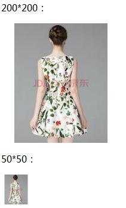

PHP原生写的生成图片缩略图类，本文以京东商品图片为例，分别生成三种不同尺寸的图片。调用方法很简单只要传参数高度和宽度，及新图片的名称。

引入缩略图类
1 include_once 'ImageResize.class.php';
生成三个不同尺寸缩略图
1 //实例化缩略图类 以京东商品为例
2 $newimage = new ImageResize();
3 //将当前目录下的test.jpg生成缩略图并保存到test_400_400.jpg，指定的宽度高度分别是400和400像素
4 $newimage->resize("test.jpg", "test_400_400.jpg", 400, 400);
5 $newimage->resize("test.jpg", "test_200_200.jpg", 200, 200);
6 $newimage->resize("test.jpg", "test_50_50.jpg", 50, 50);
7 //获取最后一条错误信息，如果生成成功则输出'success'
8 echo $newimage->GetLastError();